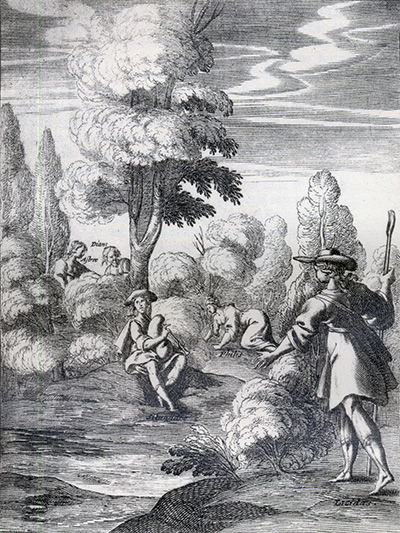
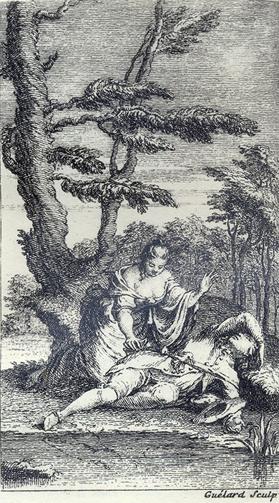
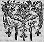

L'Astrée
d'Honoré d'Urfé
Deuxième partie
Livre 7

Silvandre joue de la cornemuse
Lycidas, Phillis, Diane et Astrée le regardent sans qu'il le sache (II, 7, 473)
[Il faudrait ajouter Léonide et Paris à cette chaîne de curieux !]
L'AstréeII, 7. Édition Vaganay**, 1925Silvandre joue de la cornemuse
Lycidas, Phillis, Diane et Astrée le regardent sans qu'il le sache (II, 7, 473)
[Il faudrait ajouter Léonide et Paris à cette chaîne de curieux !]
(Voir Illustrations)

Gravure signée Guélard
Léonide dérobe le sac de Céladon endormi (II, 7, 435)
L'AstréeII, 7. Édition Vaganay**, 1925Gravure signée Guélard
Léonide dérobe le sac de Céladon endormi (II, 7, 435)
(Voir Illustrations)
Édition de 1610, p. 431.
Édition de Vaganay, p. 273.
Privé de mon vrai bien, ce bien faux me soulage.
comment les aurait-il eues ? Et lors jetant la main sur la première qui se présente, elle la trouva telle :
Léonide lut cette lettre sans savoir presque ce qu'elle lisait, parce que se représentant
HISTOIRE
DE GALATHÉE.
SONNET.
Qu'il est jaloux avec raison.

Amour qui dans mon cœur vas lisant mes pensées,
Dans mon cœur où ta main tous les jours les écrit,
Ne vois-tu qu'un soupçon malgré toi les aigrit,
Quoiqu'avec tes douceurs elles soient commencées ?
I.
II.
Que si quelques soupçons d'une jalouse guerre
Ébranlent en mon cœur cette constante Foi,
C'est comme quand les vents sont enclos dans la terre,
Qui, par des tremblements, la remplissent d'effroi.
III.
Mes pleurs sont l'océan, aussi tarir mes larmes
N'est un moindre dessein que d'épuiser la mer !
La peur de n'être aimé, cause de tant d'alarmes,
C'est l'orage qui fait cette mer écumer.
IV.
VI.
Aussi comme les vents diversement frémissent
Sous des rochers affreux dont ils n'osent partir,
De même mes désirs au respect obéissent,
Et dans mon cœur enclos n'en oseraient sortir.
VII.
Cet invisible Feu qui les airs environne,
C'est la flamme secrète où je me vais brûlant,
Et comme ce grand Feu ne se voit de personne,
À chacun mon ardeur je vais dissimulant.
VIII.
Le Soleil, c'est votre œil, lumière sans seconde.
Bel œil, Soleil d'Amour, qui nous éclaire à tous ;
Que si l'autre Soleil donne la vie au Monde,
Quel Amant peut nier de la tenir de vous ?
XI.
L'été
η, * c'est le transport dont le sang me bouillonne,
Et l'Hiver, c'est la peur qui me gèle en tout temps.
Mais que me vaut cela, si toujours mon Automne
Est sans fruits aussi bien que sans fleurs mon
Printemps ?


Livre 6

Livre 8
Référence électronique :
document.write('"'+document.title.substr(0, document.title.indexOf("-")-1)+'". '+"Dernière mise à jour : "+ExtractDate(document.lastModified)+".")Deux visages de L'Astrée.
©2005-2020 E. Henein.
URL :
var today = new Date();
document.write(document.URL +
"<br>Consulté le : " + today.toLocaleDateString("fr-FR") + ".");
var _gaq = _gaq || [];
_gaq.push(['_setAccount', 'UA-19288475-1']);
_gaq.push(['_trackPageview']);
(function() {
var ga = document.createElement('script'); ga.type = 'text/javascript'; ga.async = true;
ga.src = ('https:' == document.location.protocol ? 'https://ssl' : 'http://www') + '.google-analytics.com/ga.js';
var s = document.getElementsByTagName('script')[0]; s.parentNode.insertBefore(ga, s);
})();
Deux visages de L'Astrée.
©2005-2019 Eglal Henein. Creative Commons 4 
Édition critique de la première partie de L'Astrée (1607, 1621)
mise en ligne le 9 avril 2007
Édition critique de la deuxième partie de L'Astrée (1610, 1621)
mise en ligne le 10 octobre 2010
Édition critique de la troisième partie de L'Astrée (1619, 1621)
mise en ligne le 1er novembre 2014
Édition critique de la quatrième partie de L'Astrée (1624)
mise en ligne le 15 janvier 2019
document.write("Dernière mise à jour : "+ExtractDate(document.lastModified))